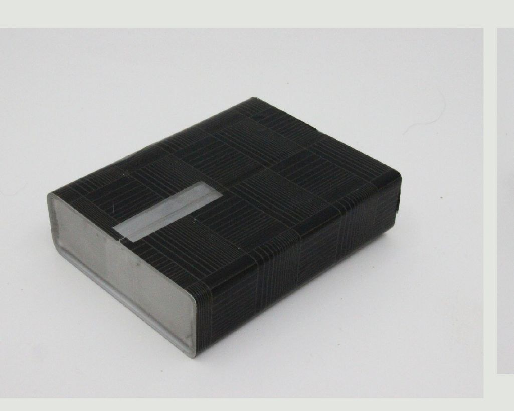
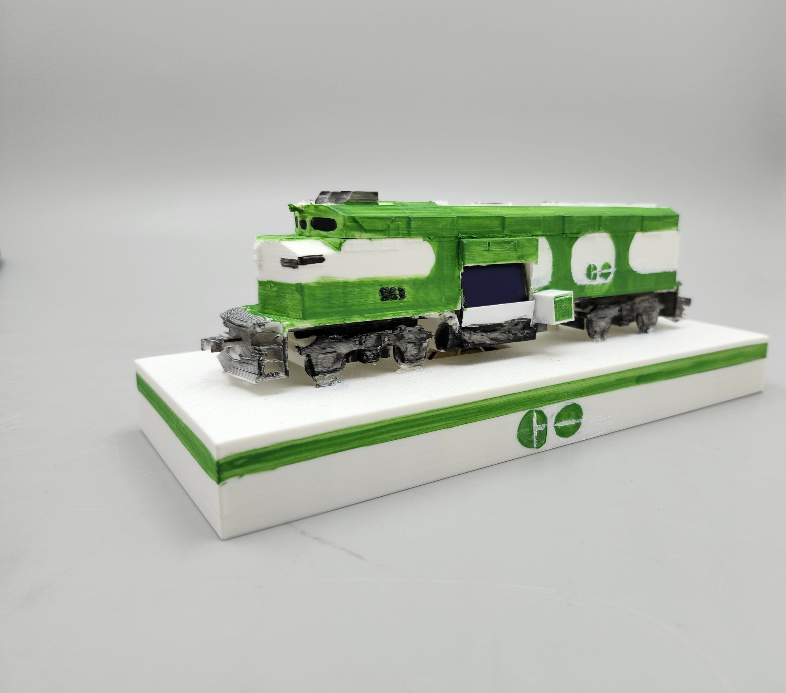
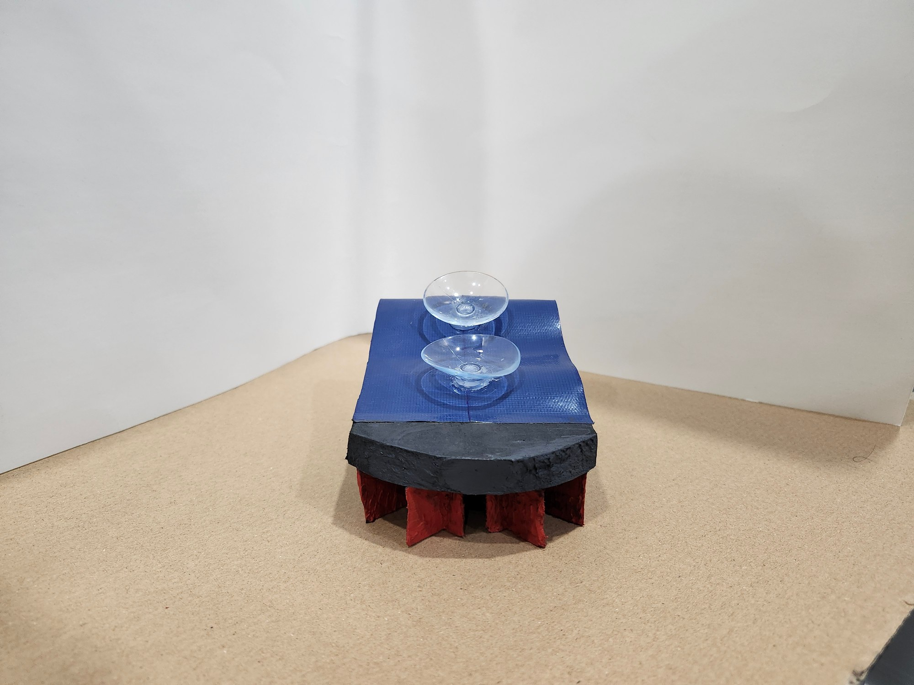

Featured work

Hero project
OstrichEyes
A concealment headset, onboarding app, and animated HUD overlay for a fully task-based future.
Concept
Speculative design
UI/motion design

Chinatown Bike Ring
A site-specific bike ring designed for Corten steel, tested full-scale in cardboard on a real Chinatown street.
Prototype
Material research
Orthographic CAD

ShellSafe Pill Container
A discreet, touch-activated pill container that removes the stigma from a daily medication routine.
Prototype
HCD interviews
Fabrication

GO Transit Tracker
A hand-painted GO Transit locomotive with a live OLED countdown pulled from real transit data.
Prototype
Arduino
Live API integration

OSF Display & Storage Cart
A wheeled, lockable display cart co-designed with the skateboarding students who'd push it around.
Prototype
Participatory co-design
Design for manufacturability

The Dugout: Bluejays Garden
A pitched conservation garden and community hub for Toronto's Quayside waterfront.
Concept
Service blueprinting
Resident interviews

SCRUFFY
A sponge-and-brush hybrid that re-sharpens a worn sponge mid-scrub.
Concept
SCAMPER ideation
Human-factors testing